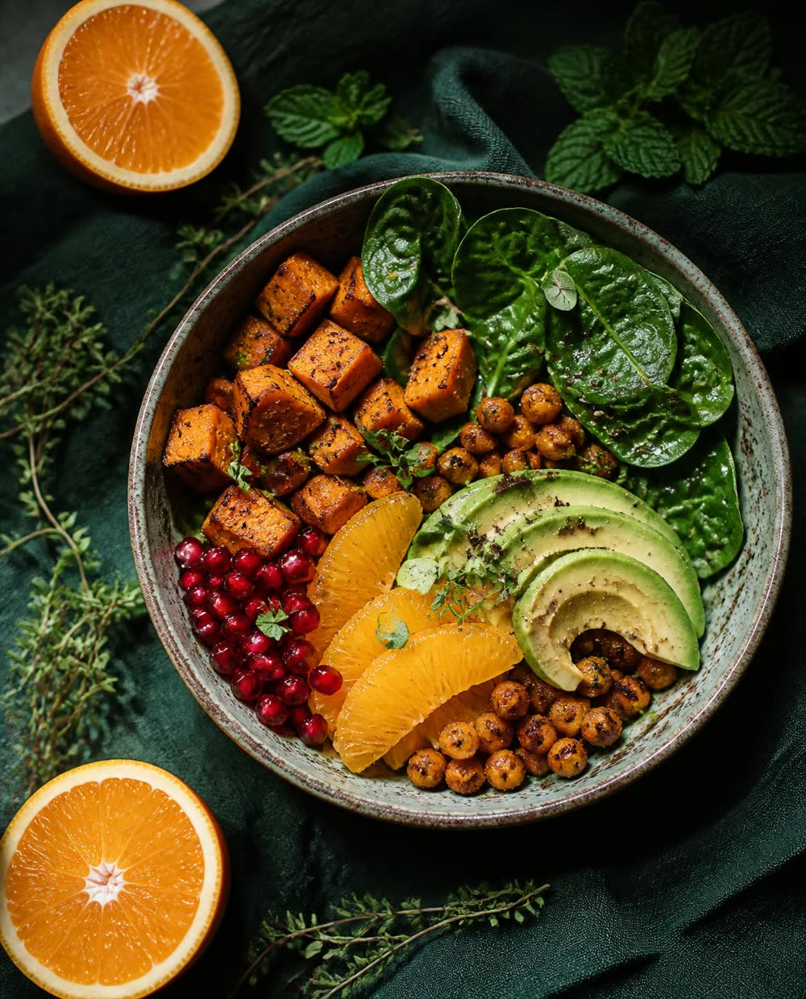

Recetas y consulta nutricional
Recetas sencillas, de quien lleva más de 20 años elaborando los menús de un hospital materno-infantil.
Recetas
Recetas que invento y pruebo yo
Platos sencillos que nutren, con el sabor bien cuidado. Toca una receta para ver los ingredientes y el paso a paso.
-
Desayuno15 min
Tortitas de avena y plátano
Ver receta -
Desayuno5 min
Tostada de ricotta y fresas
Ver receta -
Desayuno15 min
Compota de manzana
Ver receta -
Comida30 min
Hamburguesas de lentejas
Ver receta -
Merienda20 min
Mini tartitas de chocolate
Ver receta -
Merienda30 min
Galletas de cuadrícula
Ver receta
Método
Cómo trabajo contigo
Hablamos
Me cuentas cómo comes, qué te gusta y qué necesidades o patologías debemos tener en cuenta.
Diseñamos
Preparo un menú a tu medida, con platos que den ganas de cocinar.
Seguimos
Revisamos cómo te va, resolvemos dudas y ajustamos lo que haga falta.

Dietista
Sobre mí
Hola, soy Miriam
Apuesto por la comida saludable, elijo alimentos que nutran, además de intentar potenciar su sabor.
- 20+años en la restauración colectiva de un hospital materno-infantil referente
- UBdiplomada en Nutrición y Dietética y técnico en Dietética
- ahora me estoy especializando en alimentación vegana
Desde hace años, parte de mi labor en el hospital es elaborar los menús, teniendo en cuenta patologías y guías de nutrición actualizadas. Además soy una apasionada de la cocina: me encanta inventar, probar y crear mis propias recetas.
Consulta individual u online
¿Hablamos de lo que comes?
O escríbeme a miriamorantos@gmail.com